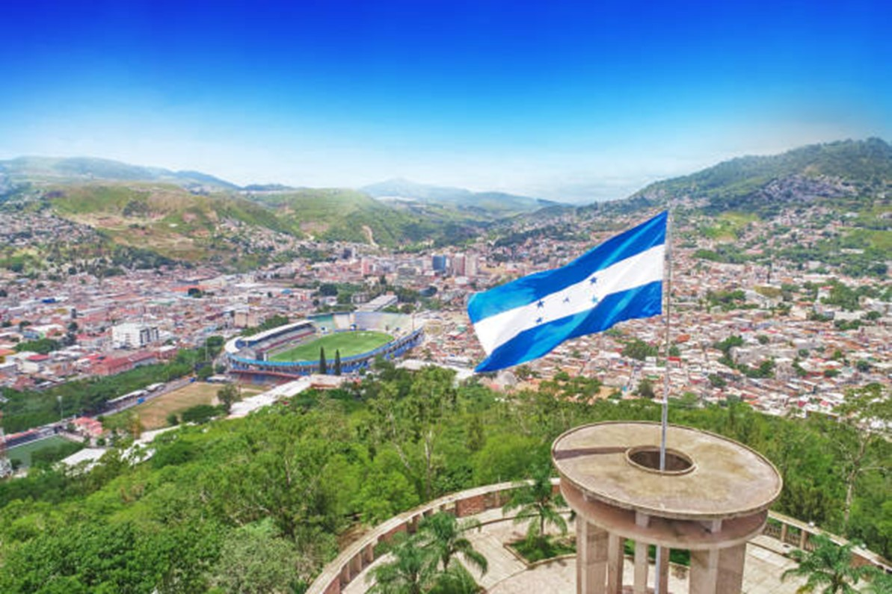
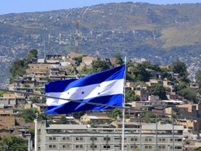

 Honduras es un estado unitario y se autodefine como libre, soberano e independiente. Limita al norte y este con el mar Caribe, al sureste con Nicaragua, al sur con el golfo de Fonseca y El Salvador, y al oeste con Guatemala,9 en cuanto a los límites marítimos colinda con México, Belice, Cuba, Isla Caimán, Guatemala, Jamaica, Colombia, Nicaragua, y El Salvador. La extensión territorial de Honduras, comprendiendo todas sus islas, es de 112 492 km².
 Las primeras elecciones del siglo XXI, habidas el 25 de noviembre de 2001, dieron el poder al empresario Ricardo Maduro, del Partido Nacional, con 52,2 % de los votos, contra el 44,2 % del profesor Rafael Pineda Ponce. El objetivo principal de Maduro fue su lucha contra la ola de criminalidad que estaba asolando el país. Ejemplo de político-empresario de mentalidad promercado, Maduro combatió la violencia de las bandas juveniles, y obtuvo éxitos más visibles en la estabilización de la economía y la reducción de la deuda externa. Sin embargo, dejó intacto el problema de la pobreza. En el campo internacional, Maduro, adhirió a Honduras al CAFTA y despachó al Batallón Xatruch hacia Irak."